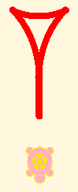
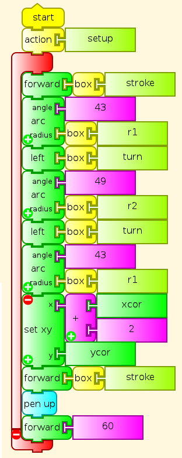
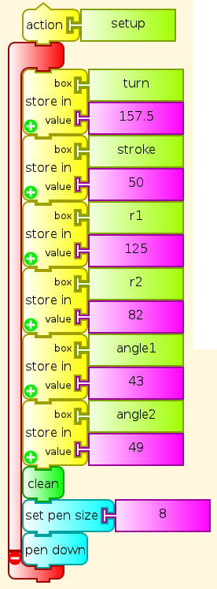

Cuneiform Wedge Glyph Program¶
The cuneiform wedge glpyh programmed here

is not defined mathematically. This program approximates it with circular arcs, which have been fitted by eye and by experimenting with values in the program. If this is not to your liking, you may be able do design an element that suits you better, and then use it to program a set of cuneiform visual numerals with it. We could compare various versions, and as with fonts for any writing system, we might decide that we like certain ones better than others.

